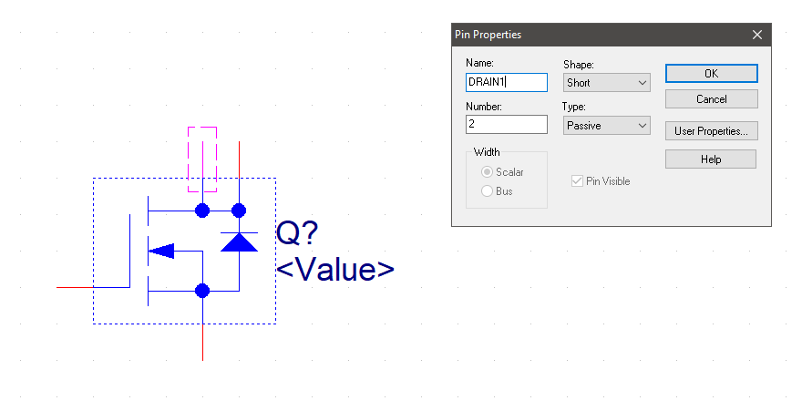
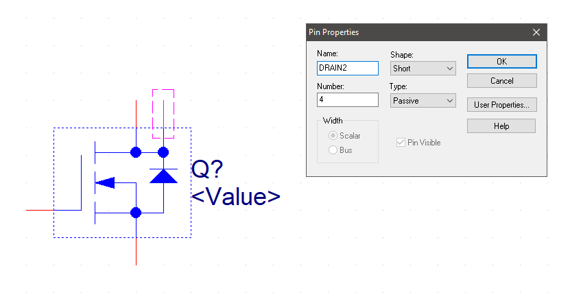

Team PCB Design
Objectives
- Schematic Design: Schematic design and creation (Previous)
- PCB Design: Schematic update and printed circuit board (PCB) layout. (Current)
- Subsystem Verification: Population and Verification (upcoming assignment)
Each assignment is due on a separate date, as indicated on Canvas.
In this assignment, your team will collaboratively design a printed circuit board (PCB) that integrates all assigned subsystems into one unified design. Each team member is responsible for updating the schematic of the subsystem assigned to them in the project block diagram. These subsystems may be heavily adapted from circuits you created in prior assignments or newly designed based on your team’s overall product requirements.
Once each member’s schematic is complete, the team will combine all subsystems with the microcontroller into a single schematic. The team will then work together to create ONE FULL PCB layout, ensuring that all subsystems interface correctly and that the design follows proper electrical and layout practices.
You must demonstrate proficiency as a team in:
- Using ECAD software to update your schematic for the subsystem(s) you are responsible for in the project
- Using ECAD software to create a custom PCB layout.
- Submitting a validated PCB design for manufacture using an LPKF ProtoMat S63 Printed Circuit Board Mill.
In this project you are permitted to use KiCAD, Cadence, Altium, or Xpedition
- KiCad is an open-source, cross-platform tool that is lighter-weight and a smaller download.
- Cadence is a professional-level industry-standard tool that takes time to download (~15 GB), install (>1 hour), and learn. Please plan accordingly.
- Altium is a professional-level industry-standard tool. It will have a learning curve but has a github quality to allow collaboration.
Resources
- Scherz, P., & Monk, S. (2016). Practical electronics for inventors, fourth edition. New York: McGraw Hill. ISBN: 978-1259587542 (many circuit design resources)
- Ordering Information folder
- Example Schematic
- Video Walkthrough of (similar previous) Assignment
- Cadence
- Summary of PCB Design Steps
- Cadence posts on the Embedded Systems Design Resources blog
- Measurement in Cadence PCB Editor
- Book: Complete PCB Design Using OrCAD Capture and PCB Editor
- KiCad
- Kiad posts on the Embedded Systems Design Resources blog
- Manufacturing Requirements
- Peralta PCB Mill Specs
- Trace Width Calculator from Advanced Circuits
- Peralta 109 Design for Manufacturing Checker
- Hardware Information
- ESP32-S3 (pre-purchased)
- ESP32-S3-WROOM-1-N4](surface mount version) [Digikey][esps3digikeylink] / [datasheet][esp32datasheet]
- ESP32 S3 Datasheet (Has more detail on functions)
- ESP32 S3 Technical Reference Manual (Has details on I/O multiplexing, USB, and others)
- Vertical Thru Hole USB connector (pre-purchased) (digikey / datasheet) / footprint info
- OLED
B00R1LR3AQ?smid=A1THAZDOWP300U)
* similar digikey part with datasheet
- related parts
- Supply Kit Bill of Materials
- ESP32-S3 (pre-purchased)
- Canvas discussion board
Instructions
Complete all of the steps below prior to submitting your assignment to Canvas.
-
Study the following critical information and concepts:
Critical Information and Concepts Importance a. What is a printed circuit board (PCB)? You will be creating a custom PCB in this assignment, so it is important to understand the different parts and terminology. Can be found in the What is a Printed Circuit Board? blog entry. b. How do we manufacture PCBs at ASU? ASU has in-house PCB manufacturing capabilities. See the ASU PCB Fabrication Process blog entry and watch the Peralta PCB Mill Process video. c. What are the minimum manufacturing requirements for a PCB? Required to ensure manufacturability and reliability of your PCB design. Review the Peralta Labs PCB Specifications. Note the recommended minimum trace widths for both power/ground and signal traces. -
Schematic Design (already completed)
- Please review the requirements from your Schematic design assignment.
- Create Footprints:Every component in your schematic must have a "footprint" (a land pattern that will be etched in the copper). Make footprints and transfer your schematic to PCB. Follow the instructions for transferring a schematic to a PCB Design (Cadence / KiCAD) page.
- Custom footprints must include your initials, and should be part of a custom footprint library named with your initials as well
- Your footprint library must be included in your submission
- Cadence only: Configure AutoSave in the PCB Editor. See the "Configuring Cadence" tutorials (standalone / cloud)
- Open up the PCB editor and set up the DRC rules (cadence / KiCAD) for your project.
-
Create a PCB Layout See the PCB Design Overviews for Cadence or KiCAD webpage for more information on how to use the PCB design tools. Your PCB design must meet all of the Peralta PCB Mill Specs, with the following additions/exceptions:
-
Maximum size 100mm x 100mm (3.93701 inches x 3.93701 in). Use the measurement tools in your PCB Designer to confirm your PCB size (Cadence / KiCad)
Board size exceptions must be approved in writing by your professor.
-
Designs will be manufactured on a 0.5 oz/ft\(^{\text{2}}\) double-sided copper PCB. If any of your traces will carry more than 500 mA, you must use a trace width calculator to ensure your traces are wide enough to handle the higher current. As necessary, update the trace widths in your design (Cadence / KiCAD). This step is critical to preventing PCB traces from burning or catching fire.
Copper thickness exceptions must be approved in writing by your professor.
-
Ground plane on both sides of your PCB design. Copper power and ground planes shield electromagnetic waves. Make sure the antenna of your wireless module does not have copper underneath it, either by rubbing out the copper or by hanging the antenna off the edge of your PCB. See how to create a ground plane (Cadence / KiCAD (step 4) ) for more information.
- Add your TeamName in a LARGE BOLD FONT to the Silkscreen layer in your PCB design (Cadence / KiCAD).
-
-
Review your PCB Design against the PCB Checklist on the embedded systems design website. This is very important and will save you debugging time later in the semester.
- Verify and Fabricate
- Run a Design Rules Check(DRC) in your PCB editor (Cadence / KiCAD) and fix any errors identified
- Export Gerber files (Cadence / KiCAD). You must export all of the following files:
- Top copper layer
- Bottom copper layer
- Top solder mask layer
- Bottom solder mask layer
- Board outline layer
- Silkscreen layer (top or bottom, but not both)
- Drill file
- Confirm that the size of your PCB is within the specification above using the measurement tools in your PCB Editor (Cadence / KiCAD).
- Print a 1:1 (100%)-sized copy of your PCB design (Cadence / KiCAD) and physically place all components on the printout to confirm that the footprints are correct. This is particularly important for ICs, connectors, and daughterboards.
-
Zip all of your PCB files together in one ZIP folder with filename
YourName###.zip, where###is your team number.Top.artBottom.artOutline.artDrill.drlSolderMaskTop.artSolderMaskBottom.artSilkscreenTop.art-
SilkscreenBottom.art -
Professor and class
- Quantity of boards (only 1 allowed per design; exceptions allowed with professor approval)
- Solder mask needed?
- Rub out area needed? If yes, specify location.
(Pro tip: Rub out copper underneath antennas) - Copper thickness (0.5, 1, or 2 oz/ft\(^{\text{2}}\))
- You must also attach the following files to your request:
- ZIP of your Gerber files created above
- (not required, not currently working) PDF of the results of the Design for Manufacturing Checking tool
- Submit your design to Canvas. Note: Submitting your design to Canvas does not automatically submit it for manufacturing, and vice-versa.
Canvas Submission
Do not submit screenshots. Do not submit links to Google documents. It is your responsibility to ensure that your submission to Canvas was successful. Late Canvas submissions will be graded per the policy in the syllabus. No credit will be awarded for assignments not submitted to Canvas.
Schematic and PCB project files and PDFs
Follow the instructions for packaging your schematic (KiCAD / Cadence) to create a PDF of your schematic, as well as a ZIP archive of your entire project, including all custom libraries, footprints, padstacks, etc. Do not submit screenshots of your schematic.
Take a screenshot of the top and bottom layers of your PCB editor window and create a PDF of those two screenshots using Adobe, Google Drive, Word,etc.
Submit PDF and ZIP files as separate documents to Canvas, by the deadline indicated.
PCB Artwork (Gerber Files)
Follow the instructions for exporting design artwork (Cadence / KiCAD) to create Gerber and drill files of your design. Combine the Gerber and drill files into a separate ZIP archive. Submit the ZIP archive to this assignment on Canvas by the deadline in Canvas. Please also email the zipped artwork files to the teaching team by November 6th for JLCPCB manufacturing.
Passing Design Rules Check
Your final submission should include a PDF showing both your design and the results of your DRC check of your design with no errors in the same frame. Please follow the instructions for setting up and running a design rules check in KiCAD or Cadence.
Grading
| Item | Points |
|---|---|
| Schematic and PCB Layout ZIP. Updated completed schematic and PCB Editor board design files in one ZIP file (submit on Canvas) | 10 |
| Schematic and PCB Layout PDF. Completed legible schematic in PDF format only. (submit on Canvas) -5 points per schematic mistake and -5 points per board layout mistake. 0 points if either PDF is illegible. |
60 |
| Gerber Files ZIP. All Gerber and drill files in a ZIP file (Email the teaching team the zipped file and upload the zip here on canvas) | 20 |
| DRC Confirmation. PDF that proves that your individual design has passed the DRC check. Your submission must be uniquely identifiable as being for your design. | 10 |
| 0 - 5 errors = 100% 6 - 10 errors = 85% 11 - 15 errors = 70% 16 - 20 errors = 55% 21 - 30 errors = 40% 31 - 40 errors = 25% 41 - 50 errors = 10% > 51 errors = 0% |
|
| Total | 100 |
Note: You may only manufacture one PCB per team member for this assignment.
Frequently Asked Questions
Q: I need help with Cadence! When are your office hours?
A: See Canvas for up-to-date information on office hours.
Q: It is difficult to create a schematic without crossing wires. Is it OK if wires cross as long as they do not connect?
A: Wires can cross in a schematic, but there are best practices for making schematics look professional. See the Keeping a Schematic Tidy blog entry and/or stop by office hours.
Q Why does my PCB Outline keep not showing up in the Gerber file but I have in the PCB Design? A It has to do with the size of the line width when creating the Artwork files. For steps on fixing this, see Step 7 in the Exporting Gerber files from Cadence PCB Editor] for clarification.
Q: If my subsystem is connecting to another team member's subsystem via one or more pins, should I leave those pins empty?
A: At this point, it is best to connect the necessary pin(s) to header pins so that you have a way to physically interface subsystems during future testing.
Q: How do you increase the size of the toolbar in Cadence?
A: Experiment with the compatibility settings in Windows. Right click on Orcad Capture Lite, select "Open file location". The program directory will pop up. Right click on the icon for Orcad Capture light, and select "properties"(1). Go to the compatibility tab and select "DPI settings"(2). Try playing with settings (3) and (4).
Q: When pulling up libraries when first starting to create a custom schematic symbol, custom library is not coming up as an option. How do I get my custom library to come up?
A: You can create a custom library folder by choosing "File > New > Library". This will create a new library with a default name under Design Resources in the project.

Once you have the custom library created, right-click on the library and choose "New Part".
Q: I get this error, how do I fix it?
Duplicate Pin Name "DRAIN" found on Package IRF520 , Q1 Pin Number 4: SCHEMATIC1, PAGE1 (4.90, 2.30). Please renumber one of these.
A: Select the part, then right click on it and select "Edit Part". If you double click on each of the top two pins, you will see that they both have the name set to "DRAIN". Change the names so that they do not match. For example, "DRAIN1" and "DRAIN2":  
{kind=link}
{kind=link}
Close the part editor tab and when it asks if you want to update the part, select "Update All" then "Yes". Save the file and try netlisting again.
Q: I need help! When are your office hours?
A: See Canvas for up-to-date information on office hours.
Q: How many times can I re-spin (re-manufacture) my PCB for this assignment?
A: You may only manufacture your PCB design one time (1 spin) for this assignment. If there are mistakes in the design after it is manufactured, please see your professor or the TAs for help in reworking your PCB to fix them.
Q: I was designing a custom padstack for my part and was wondering if my hole size should correspond to a drill size listed on the PCB Mill Specs page. For example I have a part with square pins that are 22.04 x 20.47 mils. Should I make it a circular hole 23.6 mil in diameter because that is what they have a bit for?
A: Yes please! This will make your board faster to manufacture and reduce wear on the tools in Peralta Lab.
Q: I am trying to connect pins on my PCB using traces. I can select the first pin easily; however, when I try to click the second pin, I get "DRC error(s) created." in the command line. The only design rules errors I received when netlisting my schematic was that some of the pins (VDDA, VDDR, and XRES) were unconnected, and this error message pops up when I try to connect built-in components as well. Because of this, I can't make any traces on my board. How do I fix this?
A: In the PCB editor, do the two pins that you are trying to connect have a thin blue line between them? If these lines are not showing up, it could indicate that the pins are not connected on the schematic. If this is the case, the PCB editor will not allow you to add a trace between the pins.
{kind=link}
Is there anything close to where you are trying to run the trace that might be causing a clearance issue (other pins, ground plane, etc)? This will also prevent the PCB editor from adding a trace.
{kind=link}
Q: I'm trying to create my PCB layout, but when I go to select a part I want to place on the board, it appears in the preview box but once selected, nothing shows up on the cursor for me to place. Any suggestions as to what I can do?
A: Check the location of the origin in the symbol file (.dra) for the part you are trying to place. If it is not near the symbol, the symbol will appear offset from the cursor and sometimes will be off of the screen.
Symbol file:
{kind=link}
When placing this symbol:
{kind=link}
To fix this, you can move the drawing origin using the option in the setup menu. You can either click near the component to set the new origin, or place it at a precise location by typing coordinates in the command line (e.g. "x 500 500").
{kind=link}
{kind=link}
For more information on using the command line to enter coordinates, see: https://embedded-systems-design.github.io/placing-and-moving-components-in-cadence-pcb-editor/
Q: I keep getting this error: "Net has fewer than two connections N00437"
A: A "net" in Cadencerefers to a connection (I.e. a wire or trace). The "fewer than two connections" error is most common when a pin is labeled with a net alias but the net alias is not used elsewhere. Try going to edit>browse>nets and click on the one named N00437 to show it on your schematic. This might help pinpoint the source of the error.
Examples would be the three connections shown below:
{kind=link}
To fix this, either remove the netlist symbol or add a matching symbol in the correct location. For example, the circuit above could be fixed by removing net1 and adding a battery connector component with GND and 5V symbols:
{kind=link}
Q: I am having trouble with path errors even after having correctly set up the config.ini file and the PCB editor settings. Do any of the other TAs have a solution to this? This sounds like it might be similar to a problem you helped someone with earlier in the week?
A: I found a couple of posts from last year's forum that could be related. Also see the instructors' answer below.
{kind=link}
{kind=link}
And...
{kind=link}
In addition to the instructions on the ESD blog, I also found it useful to bring all my custom paths to the top of the search order in pcb editor. This seemed to have a positive impact for me.
Make sure you do not have spaces in any of the pathnames that you enter.
Q: I am trying to remake my footprint for my microcontroller and when I try to put in "x 100 -900" i keep receiving this error "Pick is outside the extent of the drawing ... pick again.". What can I do to fix this error?
A: You can fix this error by going into Setup> Design Parameters, and choosing the minimum x and y distances to be -10000. The reason why you are getting this error is because the default minimums are set to 0 for both x and y, thus -900 is not defined. See below:
{kind=link}
Q: My board got rejected due to via size issues. What should I do?
A: The default via pad in Cadence is too small to be manufactured on our mill. Please see the following tutorial on how to fix this problem to avoid DFM errors or rejected PCB's. Increasing the size also makes the vias easier to work with during debugging and testing.
Q: When I try and route a trace through a VIA (double click) it will not switch to the backside of the PCB. I noticed on the left in the options it shows 'Top', 'Bottom', and 'No available via'. Any idea why I cant add vias?
A: Inside Allegro PCB Designer,
- Setup \(\rightarrow\) Constraints \(\rightarrow\) Constraint Manager
- 'Physical' tab
- Net \(\rightarrow\) 'All Layers'
- Select 8th column (Vias)
- Double click each cell and select your favorite VIA
- Close \(\rightarrow\) Enjoy